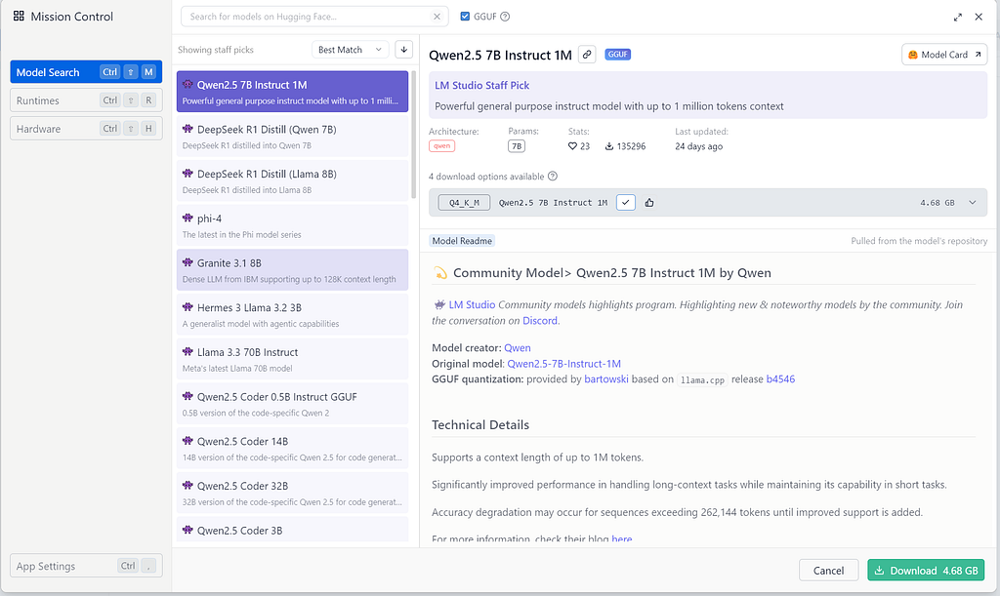
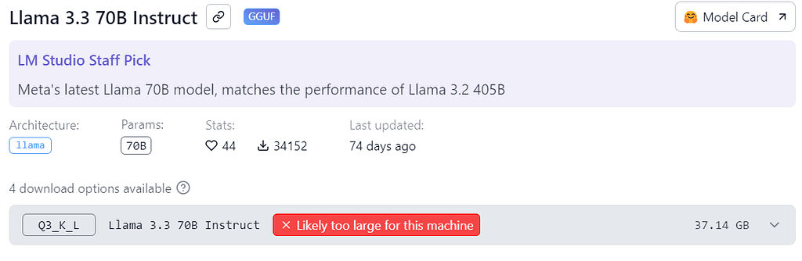
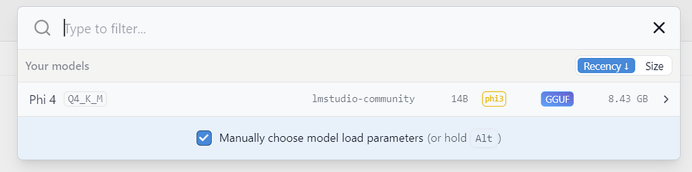
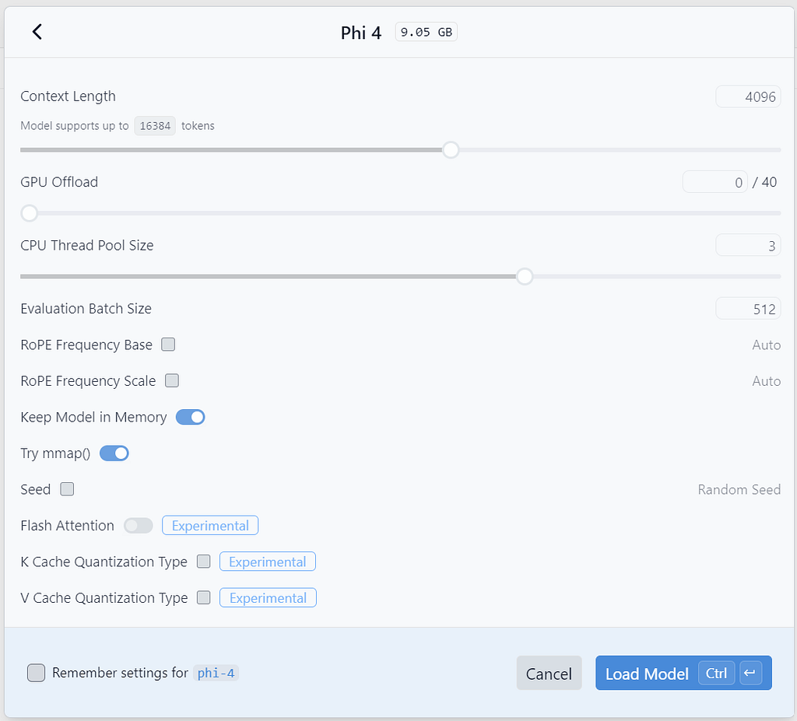
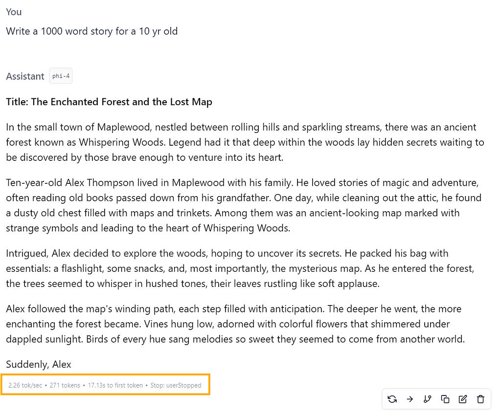
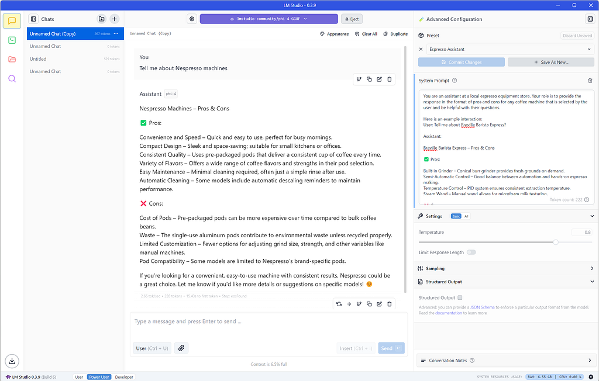
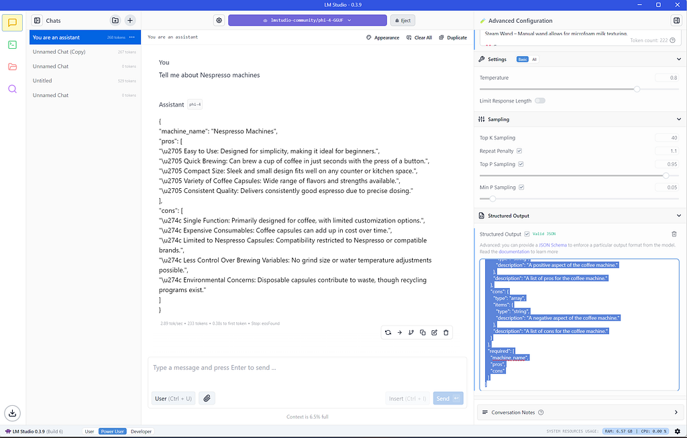

Language models are transforming the way we interact with AI, with services like ChatGPT, Copilot, Gemini, and Perplexity offering seamless conversational experiences. However, many users engage with these models only through cloud-based platforms, unaware that they can experiment with and run models locally — even on low-resource machines.
Thanks to recent advancements in model optimization, including distillation and quantization, smaller language models have become more accessible. If you’re interested in exploring local AI without requiring powerful hardware, there are user-friendly applications that make this possible.
Why Run Language Models Locally?
- Privacy: Avoid sending data to cloud-based AI services.
- Customization: Fine-tune models for specific tasks.
- Offline Access: Use AI capabilities without an internet connection.
- Cost Savings: Eliminate reliance on paid API services.
Exploring LM Studio and Ollama
Two notable options are LM Studio and Ollama, both of which provide intuitive ways to interact with open-source language models.
LM Studio (lmstudio.ai)
LM Studio offers a comprehensive multi-threaded chat interface, making it an excellent choice for those who prefer a graphical user experience. The platform features an extensive catalog of models and allows users to experiment with different LLMs seamlessly. Additionally, LM Studio can function as a server, enabling integration with other applications.
Ollama (ollama.com)
Ollama provides a lightweight command-line interface for interacting with language models. It is ideal for users comfortable with terminal-based workflows and supports model serving capabilities, allowing for broader applications in AI development and experimentation.
As LM Studio is my personal favorite, lets take a detailed look on that below.
Getting Started with LM Studio
Visit lmstudio.ai and download the appropriate version for your operating system.

As seen above, LM studio offers a simple intuitive interface to pick a model to be loaded into local machine. Consider paying attention to the “Likely too large for this machine”

Loading the downloaded model


When available, offload the model to GPU for the best performance, so those matrix multiplications are parallelized.
Performance Metrics
Once the model is loaded, start playing around in the chat interface and view your system performance with metrics like
- Tokens/second
- Seconds to first token
- System Resource Usage

Create your own assistant
Create your own chat personas or task specific assistant by customizing the system prompts. We will create a bot that is an assistant at local coffee gear shop. View system prompt below,
You are an assistant at a local espresso equipment store.
Your role is to provide the response in the format of pros and cons for any coffee machine that is selected by the user and be helpful with their questions.
Here is an example interaction:
User: Tell me about Breville Barista Express?
Assistant:
Breville Barista Express – Pros & Cons
✅ Pros:
Built-in Grinder – Conical burr grinder provides fresh grounds on demand.
Semi-Automatic Control – Good balance between automation and hands-on espresso making.
Temperature Control – PID system ensures consistent extraction temperature.
Steam Wand – Manual wand allows for microfoam milk texturing.
Value for Money – High-end features at a mid-range price.
❌ Cons:
Learning Curve – Requires some practice to dial in grind size and pressure.
Single Boiler – Can’t brew and steam milk simultaneously.
Limited Grinder Settings – Fewer adjustments compared to standalone grinders.
Plastic Components – Some parts feel less durable over time.
Let me know if you’d like a comparison with another machine or any recommendations based on your preferences! 😊

Structured Output
You can get more from local LMs by enabling structured output from the model under Advanced configuration. This can be extremely valuable in minimizing the loss of data during string extraction.
{
"type": "object",
"properties": {
"machine_name": {
"type": "string",
"description": "The name of the coffee machine."
},
"pros": {
"type": "array",
"items": {
"type": "string",
"description": "A positive aspect of the coffee machine."
},
"description": "A list of pros for the coffee machine."
},
"cons": {
"type": "array",
"items": {
"type": "string",
"description": "A negative aspect of the coffee machine."
},
"description": "A list of cons for the coffee machine."
}
},
"required": [
"machine_name",
"pros",
"cons"
]
}
Conclusion
Running language models locally empowers users with greater control, privacy, and flexibility in their AI interactions. With tools like LM Studio and Ollama, experimenting with LLMs has never been easier. As the field continues to evolve, local AI solutions will become even more powerful, making this the perfect time to get started. Let's look at how to use the LM Studio’s server mode in Part 2.